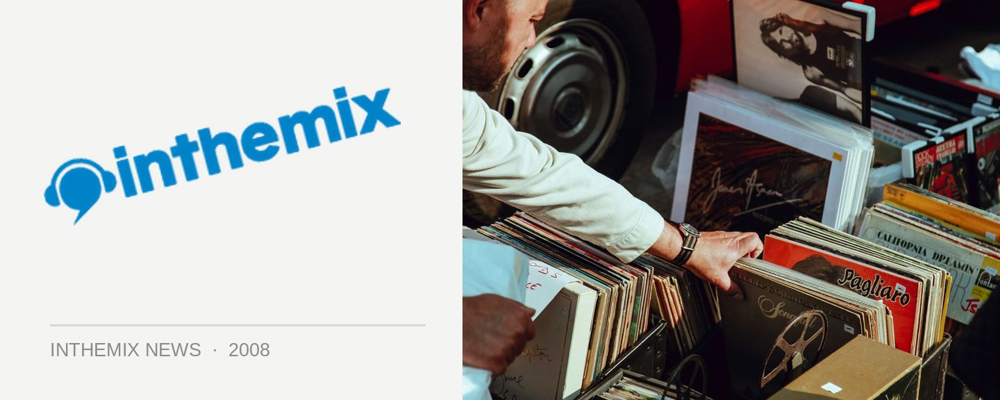

inthemix50 DJ mixes special!
With voting in the 2008 Sony inthemix50 now well underway, we’ve been highlighting some of Australia’s best talent with a stack of fresh DJ mixes now online. There are over 50 sets ready and waiting on the page for your listening pleasure, and we’ve got even more to go up over the remaining weeks of voting. House, tech, trance, electro, breaks, minimal, DnB… There’s something for everyone.
Highlight sets include:
> Dirty South
> TV Rock
> Carl Kennedy
> Bexta
> Goodwill
> DJ Brendon
> Bang Gang DJs
> Mike Callander
> Dopamine
> Tydi
> The Aston Shuffle
Head to the full listing page here if you’d like to see what’s on offer. And while you’re at it, don’t forget to vote – your favourite DJs, producers and club nights and festivals are counting on it!